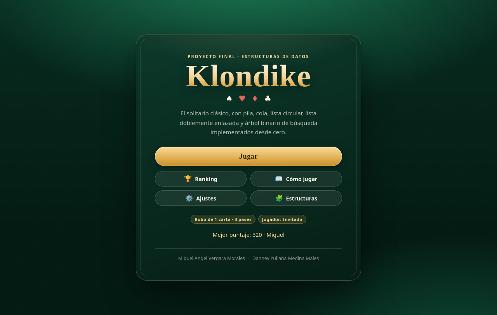
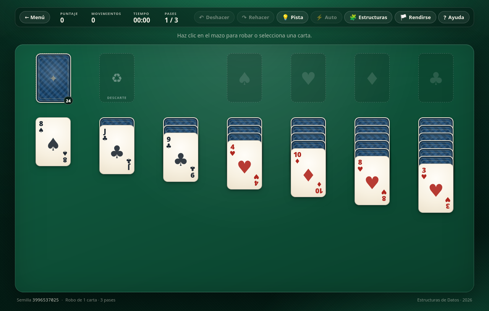
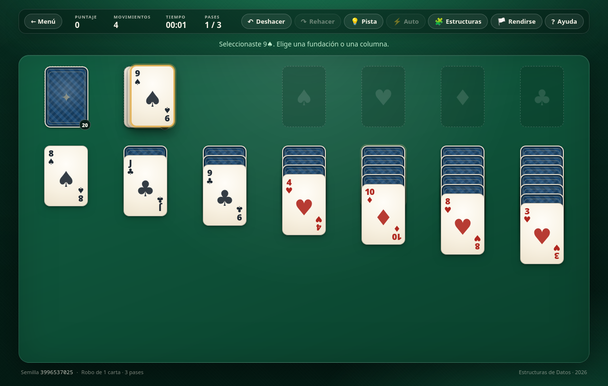
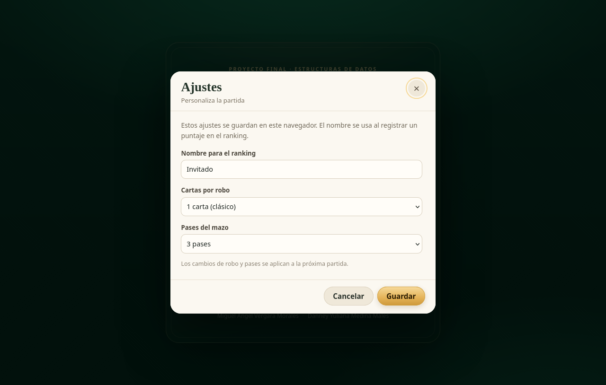
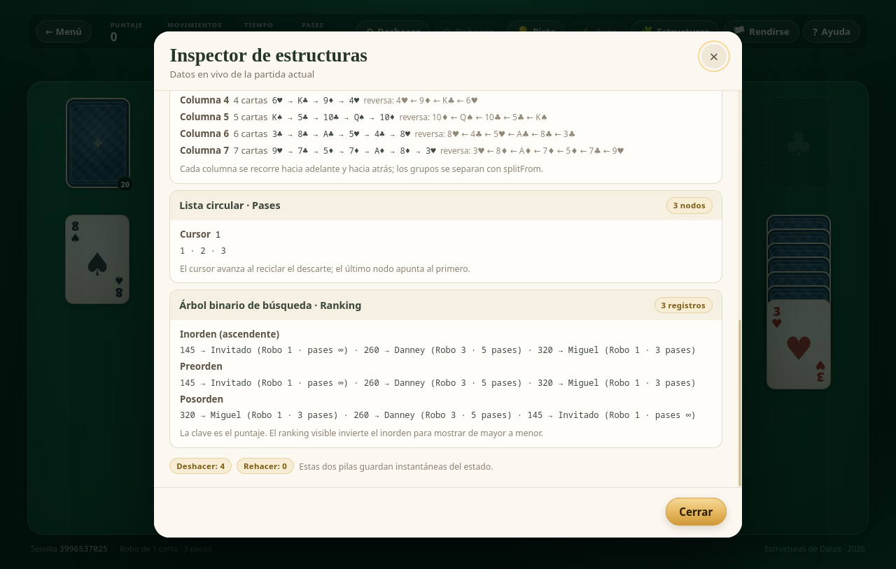
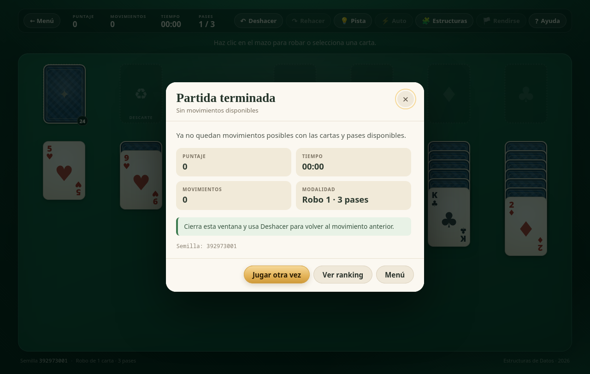

Proyecto final · Estructuras de Datos
Klondike
Manual de usuario
Este manual explica cómo abrir el juego, cuáles son las reglas del Klondike, cómo se utilizan los controles y qué debe hacer el jugador para ganar o perder. Las capturas corresponden a la versión entregada en noviembre de 2026.
Contenido
- ¿Qué es este juego?Objetivo y descripción general
- Antes de empezarRequisitos y forma de abrir el juego
- Pantalla principalMenú y opciones disponibles
- Reglas del KlondikePreparación, movimientos y pases
- ControlesRatón, teclado y arrastrar y soltar
- Cómo jugar una partidaPaso a paso con capturas
- AjustesNombre, cartas por robo y pases
- Herramientas de ayudaPistas, autocompletar, deshacer e inspector
- Cómo se gana y cómo se pierdeCondiciones de fin de partida
- Ranking de puntajesMejores resultados y borrado
- Preguntas frecuentesProblemas habituales y soluciones
- CréditosAutores y datos del proyecto
Convenciones de este manual
Los nombres de botones y ventanas aparecen en negrita. Las teclas se muestran
como U, D o Esc. Las capturas se tomaron con la modalidad
de robo de 1 carta y 3 pases, salvo que se indique otra cosa.
1. ¿Qué es este juego?
Klondike es la versión clásica del solitario que se juega con una baraja francesa de 52 cartas. El objetivo es trasladar todas las cartas a cuatro fundaciones, una por palo, en orden ascendente desde el As hasta el Rey.
La partida comienza con siete columnas en el tablero y un mazo de robo. El jugador descubre cartas, forma secuencias descendentes alternando colores y aprovecha el descarte para avanzar. No hay oponentes ni turnos: el único límite es la cantidad de pases configurada para el mazo.
Características de esta versión
- Interfaz gráfica completa en el navegador, con cartas, animaciones suaves y diseño adaptable a pantallas pequeñas.
- Dos modalidades de robo: 1 carta (clásica) o 3 cartas.
- Tres configuraciones de pases: 3, 5 o ilimitados.
- Deshacer y rehacer cualquier cantidad de movimientos.
- Pistas de movimiento y autocompletado cuando el tablero está descubierto.
- Ranking local con los 10 mejores puntajes.
- Inspector de estructuras para observar en vivo las pilas, colas, listas y el árbol del ranking.
Un detalle importante
El juego guarda los ajustes y el ranking en el almacenamiento local del navegador. No se envía información a internet ni se necesita crear una cuenta.
2. Antes de empezar
Requisitos
| Elemento | Requisito |
|---|---|
| Navegador | Firefox, Chrome, Edge u otro navegador moderno con soporte para módulos ES y localStorage. |
| Sistema operativo | Windows, macOS o Linux. El juego no depende del sistema. |
| Instalación | Ninguna. No hay que compilar ni instalar dependencias. |
| Servidor local | Opcional, pero necesario si se ejecuta el código desde una carpeta. Se puede usar Python o la extensión Live Server de VS Code. |
| Pantalla | Se adapta desde teléfonos (aproximadamente 400 px de ancho) hasta monitores grandes. |
Abrir el juego desde el repositorio
El proyecto usa módulos nativos de JavaScript. Por seguridad, los navegadores no cargan módulos
cuando el archivo se abre con doble clic (file://). Por eso debe servirse por HTTP.
Opción A: servidor con Python
- Abrir una terminal en la carpeta del proyecto.
- Ejecutar
python3 -m http.server 8000. - Abrir http://localhost:8000 en el navegador.
- Para detener el servidor, presionar
Ctrl+Cen la terminal.
Opción B: Live Server en VS Code
- Abrir la carpeta del proyecto en VS Code.
- Hacer clic derecho sobre
index.htmly elegir Open with Live Server. - VS Code abrirá una dirección local, normalmente http://127.0.0.1:5500.
Opción C: GitHub Pages
Si el repositorio publica la rama main con GitHub Pages, el juego queda disponible en
la dirección que indique el repositorio. No se requiere instalar nada en el equipo.
Si aparece una página en blanco
Verifica que estés abriendo el juego con http:// y no con file://.
También revisa la consola del navegador (F12) para descartar errores de carga.
3. Pantalla principal
Al abrir el juego aparece el menú principal. Desde aquí se inicia una partida o se accede a las demás secciones.

| Opción | Para qué sirve |
|---|---|
| Jugar | Inicia una partida nueva con la modalidad y el nombre configurados. |
| Ranking | Muestra los 10 mejores puntajes guardados en este navegador. |
| Cómo jugar | Abre las reglas resumidas, la tabla de puntaje y los atajos de teclado. |
| Ajustes | Permite cambiar el nombre, las cartas por robo y la cantidad de pases. |
| Estructuras | Explica qué estructura de datos cumple cada función dentro del juego. |
Los cambios de robo y pases se aplican a la próxima partida. El nombre se usa cuando un puntaje entra al ranking.
4. Reglas del Klondike
4.1 Objetivo
Mover las 52 cartas a las cuatro fundaciones. Cada fundación se arma con un solo palo, en orden ascendente: As, 2, 3, 4, 5, 6, 7, 8, 9, 10, J, Q y K.
4.2 Preparación
El tablero tiene siete columnas con 1, 2, 3, 4, 5, 6 y 7 cartas respectivamente. Solo la carta superior de cada columna queda boca arriba; las demás están ocultas. Las 24 cartas restantes forman el mazo de robo.
A la izquierda del tablero están el mazo y el descarte. A la derecha, las cuatro fundaciones. La Figura 2 muestra la distribución inicial.

4.3 Cómo mover las cartas
| Zona | Regla |
|---|---|
| Mazo | Al hacer clic se roban una o tres cartas, según los ajustes. Cuando se agota, un clic recicla el descarte y consume un pase. |
| Descarte | Solo la carta superior puede moverse. Puede ir a una fundación o a una columna del tablero. |
| Columnas | Se construyen de forma descendente y alternando colores: una carta roja sobre una negra, o una negra sobre una roja. Una columna vacía solo acepta un Rey. |
| Grupos | Se puede mover una secuencia completa de cartas boca arriba que ya esté ordenada de forma descendente y alternando colores. |
| Fundaciones | Reciben la carta siguiente del mismo palo, empezando por el As. La carta superior de una fundación puede devolverse a una columna del tablero. |
4.4 Voltear cartas
Cuando la carta superior de una columna se mueve, la siguiente carta oculta se voltea automáticamente y suma puntos. Las cartas ocultas no se pueden seleccionar ni mover.
4.5 Pases
Cada vez que el mazo se agota y se recicla el descarte se consume un pase. La partida puede configurarse con 3 pases (valor por defecto), 5 pases o pases ilimitados. El indicador Pases muestra el pase actual y el límite; con pases ilimitados aparece el símbolo ∞.
4.6 Puntaje
| Acción | Puntos |
|---|---|
| Mover una carta a una fundación | +10 |
| Voltear una carta del tablero | +5 |
| Devolver una carta de la fundación al tablero | −15 |
| Reciclar el descarte | −20 |
| Completar la partida | +100 |
El puntaje nunca baja de cero.
5. Controles
El juego se puede manejar con el ratón o con el teclado. Todas las acciones importantes tienen un botón visible en la barra superior de la partida.
5.1 Ratón
| Acción | Resultado |
|---|---|
| Clic en el mazo | Roba una o tres cartas. Si el mazo está vacío, recicla el descarte. |
| Clic en una carta | La selecciona y resalta los destinos válidos con un borde dorado. |
| Clic en una columna o fundación | Mueve la selección al destino, si el movimiento es válido. |
| Clic en la misma carta | Cancela la selección. |
| Doble clic en el descarte o en la carta superior de una columna | Envía la carta directamente a su fundación si es posible. |
| Arrastrar y soltar | Mueve una carta o un grupo a otra columna o fundación. Los destinos válidos se iluminan al pasar por encima. |
5.2 Teclado
| Tecla | Acción |
|---|---|
D | Robar del mazo o reciclar el descarte. |
U | Deshacer el último movimiento. |
Y | Rehacer el movimiento deshecho. |
P | Mostrar una pista de movimiento. |
A | Autocompletar cuando todas las cartas del tablero estén boca arriba. |
I | Abrir el inspector de estructuras. |
Esc | Cancelar la selección actual. |
Tab y Enter | Recorrer los elementos con foco y activar la pila seleccionada. |
Consejo
Si no sabes qué mover, presiona P. La pista resalta la carta y el destino sugerido.
Si no hay pistas, el juego avisará que no quedan movimientos disponibles.
6. Cómo jugar una partida
Paso 1. Iniciar la partida
En el menú principal, hacer clic en Jugar. El tablero se reparte al azar, pero la semilla utilizada aparece al pie de la pantalla. La barra superior muestra puntaje, movimientos, tiempo y pases.
Paso 2. Robar del mazo
Hacer clic sobre el mazo (o presionar D). En la modalidad de 1 carta se descubre una
carta por clic; en la modalidad de 3 se descubren tres. La carta superior del descarte queda
disponible para jugar.
Paso 3. Seleccionar una carta
Hacer clic sobre la carta superior del descarte o sobre una carta boca arriba del tablero. La carta se marca con un borde dorado y los destinos válidos se resaltan. Si se seleccionó una secuencia válida, se moverá el grupo completo.

Paso 4. Elegir el destino
Hacer clic en la columna o fundación resaltada. Si el movimiento es válido, la carta se mueve y se actualizan los contadores. Si no lo es, aparece un mensaje de advertencia y la selección se conserva para intentar otro destino.
Paso 5. Descubrir y ordenar
Repetir el proceso: mover cartas a las fundaciones, formar secuencias descendentes en las columnas y voltear las cartas ocultas. Cuando una columna quede vacía, solo se puede ocupar con un Rey.
Paso 6. Reciclar el mazo
Cuando el mazo se vacíe, hacer clic sobre él para reciclar el descarte. Cada reciclaje consume un pase y reinicia el descarte en el orden inverso al que fue robado. El contador de pases indica cuántos quedan.
Paso 7. Terminar la partida
La partida termina cuando las cuatro fundaciones están completas (victoria) o cuando no quedan movimientos posibles, cartas en el mazo ni pases disponibles (derrota). También es posible rendirse desde el botón Rendirse.
Autocompletar
Cuando todas las cartas del tablero estén boca arriba, el botón Auto se habilita. Al usarlo, el juego mueve automáticamente las cartas que ya pueden ir a las fundaciones hasta completar la partida. Es la forma más rápida de cerrar una victoria.
7. Ajustes
La ventana Ajustes se abre desde el menú principal. Los cambios se guardan en el navegador y se conservan al cerrar y volver a abrir el juego.

| Campo | Valores | Efecto |
|---|---|---|
| Nombre para el ranking | Texto de hasta 20 caracteres | Se usa al guardar un puntaje. Si se deja vacío, se registra como Invitado. |
| Cartas por robo | 1 carta (clásico) · 3 cartas | Determina cuántas cartas se descubren en cada clic sobre el mazo. |
| Pases del mazo | 3 pases · 5 pases · Ilimitados | Limita cuántas veces se puede reciclar el descarte. |
Los cambios no alteran la partida en curso
El robo y los pases se aplican a la próxima partida. Para jugar con la nueva modalidad, guarda los ajustes y luego elige Jugar desde el menú.
8. Herramientas de ayuda
8.1 Deshacer y rehacer
Los botones Deshacer y Rehacer, o las teclas U y
Y, permiten retroceder y repetir movimientos. Se puede deshacer incluso después de una
derrota: cierra la ventana de resultado y usa Deshacer para volver al movimiento
anterior. El historial no tiene un límite práctico para una partida normal.
8.2 Pistas
El botón Pista (o la tecla P) busca un movimiento útil y lo resalta.
La pista puede sugerir robar del mazo, reciclar el descarte, enviar una carta a una fundación o
mover una carta entre columnas.
8.3 Inspector de estructuras
El botón Estructuras (o la tecla I) abre un panel con el contenido
real de las estructuras en ese instante: el mazo, el descarte, las fundaciones, las siete columnas,
la lista circular de pases y el árbol del ranking. También muestra los recorridos del árbol y las
pilas de deshacer y rehacer.


El inspector es una herramienta de aprendizaje y de sustentación: permite comprobar que las estructuras realmente almacenan el estado del juego.
9. Cómo se gana y cómo se pierde
9.1 Victoria
La partida se gana cuando las 52 cartas están en las cuatro fundaciones, cada una completa de As a Rey. Al ganar se suman 100 puntos y, si el puntaje entra al top 10, se guarda en el ranking con el nombre configurado.
9.2 Derrota
La partida se pierde cuando no queda ningún movimiento posible, el mazo está vacío y no quedan pases para reciclar el descarte. También se pierde si el jugador elige Rendirse y confirma la acción.

9.3 Después del resultado
| Botón | Acción |
|---|---|
| Jugar otra vez | Inicia una partida nueva con la misma modalidad y un reparto nuevo. |
| Ver ranking | Muestra la tabla de mejores puntajes. |
| Menú | Regresa a la pantalla principal. |
La ventana se puede cerrar
El botón × cierra la ventana de resultado sin abandonar la partida. En una derrota, esto permite usar Deshacer y continuar desde el movimiento anterior.
10. Ranking de puntajes
El ranking guarda hasta 10 puntajes por navegador. Se ordena de mayor a menor y muestra el nombre, el puntaje, la modalidad, el tiempo, la cantidad de movimientos y la fecha de la partida.

¿Cuándo se guarda un puntaje?
- Solo se guardan partidas ganadas.
- Si el top 10 está lleno, el nuevo puntaje debe ser mayor o igual que el último para entrar.
- Si el puntaje no alcanza, la ventana de victoria lo informa y el ranking no cambia.
- El puntaje se asocia al nombre configurado en Ajustes.
Borrar el ranking
En la pantalla del ranking, el botón Borrar ranking pide confirmación y elimina todos los puntajes guardados en este navegador. La acción no se puede deshacer.
Los puntajes son locales
El ranking se guarda en el almacenamiento del navegador. Si se borran los datos del sitio, se usa el modo privado o se cambia de navegador, la tabla aparecerá vacía. No hay sincronización entre dispositivos.
11. Preguntas frecuentes
El juego no carga y la página queda en blanco
Asegúrate de abrirlo con un servidor HTTP (http://localhost:8000) y no con doble clic
sobre index.html. Los módulos de JavaScript requieren un servidor.
No puedo mover una carta a una columna
Revisa que la carta sea exactamente una unidad menor y de color contrario a la carta superior de la columna. Si la columna está vacía, solo se admite un Rey. Si intentas mover un grupo, toda la secuencia debe estar ordenada y alternando colores.
No puedo reciclar el descarte
Puede que hayas agotado los pases configurados. El indicador Pases muestra el consumo actual. Si la partida tiene 3 pases, solo se puede reciclar mientras el contador no llegue al límite. Para futuras partidas, cambia la modalidad en Ajustes.
El botón Auto está deshabilitado
El autocompletado solo se habilita cuando todas las cartas del tablero están boca arriba. Sigue jugando hasta descubrir las cartas ocultas.
Perdí mi puntaje o mi nombre
El juego guarda la información en el navegador. Si borraste los datos del sitio o cambiaste de navegador, esa información se perdió. Vuelve a escribir el nombre en Ajustes.
La pantalla se ve pequeña o desbordada
El tablero se adapta al ancho disponible. En teléfonos, gira el dispositivo a horizontal para ver las columnas con más comodidad. Si el problema continúa, actualiza el navegador.
¿Puedo jugar sin conexión a internet?
Sí, una vez que el juego está abierto o publicado localmente. No se descargan recursos externos; todos los estilos e imágenes forman parte del proyecto.
12. Créditos
- Proyecto
- Klondike — Solitario con estructuras de datos propias
- Curso
- Estructuras de Datos
- Integrantes
- Miguel Angel Vergara Morales · Danney Yuliana Medina Males
- Lenguaje
- JavaScript (ES2022), HTML5 y CSS3
- Dependencias
- Ninguna. No se usan frameworks ni librerías externas.
- Estructuras
- Pila, cola, lista circular, lista doblemente enlazada y árbol binario de búsqueda, implementadas desde cero.
- Entrega
- Noviembre de 2026
Este manual y el manual técnico forman parte de la documentación del proyecto final. Las capturas se generaron con Firefox en una ventana de 1280 × 900 px y en una vista móvil de 500 × 900 px.
¡A jugar!
Abre el menú, elige Jugar y trata de llevar las 52 cartas a las fundaciones. Recuerda que puedes deshacer, pedir una pista y revisar el inspector de estructuras cuando lo necesites.